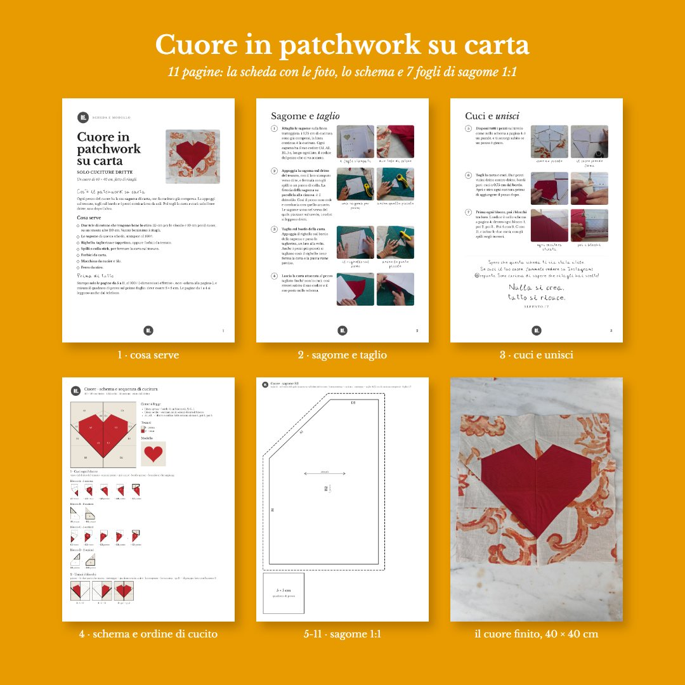

Cuore in patchwork su carta, con i ritagli
Un cuore di 40 × 40 cm, fatto di ritagli e di sole cuciture dritte. Il patchwork su carta in Italia lo conoscono in pochi, ma è il modo più semplice per avere punte che combaciano: ogni pezzo ha la sua sagoma di carta, la appoggi sul tessuto e tagli sul bordo. Poi togli la carta e cuci.
PDF di 11 pagine A4 con le foto a colori · si scarica subito dopo il pagamento
Con la newsletter la scheda del mese costa 4 € invece di 6 € · iscriviti gratis

Le sagome già pronte, facili da ritagliare e piazzare sul tessuto
- Ogni passaggio in foto, dalla sagoma al cuore finito
- Lo schema del cuore con tutti i codici e l'ordine di cucito, a disegnini
- Le 14 sagome a grandezza vera in soli 7 fogli, con 0,75 cm di cucitura già compresi
- Su ogni sagoma la freccia del drittofilo, così i pezzi non cedono e combaciano
- Il quadrato di prova per controllare che la stampa sia giusta
Ti servono due tele di cotone che tengono bene lo stiro: 25 cm per lo sfondo e 10 cm per il cuore, su un tessuto alto 110 cm. Vanno benissimo i ritagli.
Le prime quattro pagine si leggono anche dal telefono, le altre sono le sagome da stampare al 100%.


Ogni mese un progetto, e la sua scheda a 4 €
Il primo di ogni mese ti scrivo una lettera dal laboratorio con un progetto di riciclo tessile spiegato passo passo, il video gratis e un codice per avere la scheda del mese a 4 € invece di 6 €. L'iscrizione è gratis, niente pubblicità, si esce quando vuoi.
Cos'è il patchwork su carta?
Si cuce seguendo le linee di una sagoma di carta, così ogni pezzo va esattamente al suo posto anche se è piccolo o a punta. Ne racconto la storia nell'articolo Paper piecing: cos'è e storia del patchwork su carta. Il video con tutti i passaggi del cuore è gratis sul canale YouTube di Repunto.
Serve la macchina da cucire?
Le cuciture sono tutte dritte: con la macchina si fa prima, ma si può cucire anche a mano con il punto indietro.
Come uso il codice del mese?
Nella pagina di pagamento premi «Aggiungi codice promozionale» e scrivi il codice che trovi nella newsletter di novembre.
Come ricevo la scheda?
Dopo il pagamento si apre la pagina con il pulsante per scaricare il PDF, e ti arriva un'email con lo stesso link, valido 30 giorni.